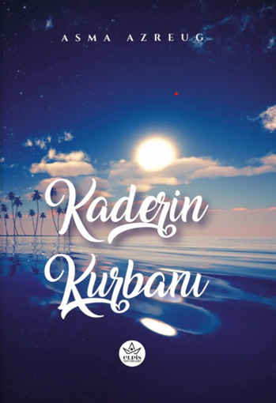
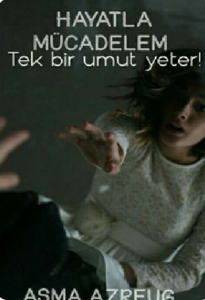

ASMA AZREUG
yazar tercüman gezgin

yazar tercüman gezgin

Tüm izler onu işaret ediyor… Her detay, her ipucu tek bir noktada birleşiyor. Ama İz’in içinde taşıdığı derin bir his, bütün bu işaretlere rağmen başka bir gerçeği fısıldıyor. O, bir insanı… bir canlıyı öldüremeyeceğini biliyor. Belki hatırlamıyor, belki geçmişi sisler ardında kaybolmuş; fakat kalbinin en derin yerinde masumiyetine dair sarsılmaz bir inanç taşıyor. Tutunabildiği tek dal bu his olurken, İz hem kaybolan geçmişinin izini sürmeye hem de kendini temize çıkaracak gerçeği bulmaya çalışıyor. Her adımda yeni bir sır, her ipucunda daha da karmaşıklaşan bir hikâye… Okuru soluksuz bırakacak bu yolculukta, siz de İz’in peşinde nefes nefese ilerleyecek, gerçekle yalan arasındaki ince çizgide kaybolacaksınız.

“Bu uçurum… beş yıl önce benim sonum olmuştu. O günden beri kendimi hep okyanusun dibinde çırpınırken buldum. Geceleri yaşadım ben… çünkü gündüzlerim bile karanlıktı; durmadan yağan yağmur, dinmeyen fırtınalar vardı içimde…” Yafes, tereddütle elini uzatıp Sidre’nin elini tuttu. Sesi, geçmişin yükünü taşıyan bir fısıltı gibiydi. “Sonra Leyan çıktı karşıma… Ona tutundum, onu ışığım sandım. O Gece’ydi… ben ise Ay’dım. Ama sonra…” Gözlerini Sidre’ye kaldırdı. “Sonra sen girdin karanlığıma. Beş yıl sonra ilk kez bir yıldız kaydı gökyüzümden. Ama ben korktum… Çünkü Gece’de yıldızlara yer olmadığını sanıyordum. Gece’nin hayatında yalnızca Ay olmalıydı. Ve ben… Ay olarak, Gece’yi korumak için o Yıldız’dan vazgeçmem gerektiğini düşündüm.” Derin bir nefes aldı. “Sonra anladım… O Yıldız’ın amacı ne Gece’yi karartmaktı ne de Ay’ın yerini almak. O, Ay’la birlikte Gece’yi aydınlatmak istiyordu… Gündüzümde Güneş olmak… İçimi ısıtmak… Bana yeniden umut olmak…” Sidre’ye hayranlıkla baktı; gözlerinde pişmanlık ve sevgi iç içeydi. “Bir zamanlar ağlattığım o mavi gözler için… artık gözyaşlarını silmeye, kalbimde yeniden umut yeşertmeye ve sana bütün kapılarımı açmaya hazırım…” Elleri bu kez kızın açık kumral saçlarına uzandı, titreyerek dokundu. “Bir zamanlar acıttığım o saçların… aslında benim kurtuluşum, benim umudummuş…” İki elini nazikçe yanaklarına koydu. “Bir zamanlar incittiğim o yanaklar… meğer benim gülüş sebebimmiş…” Sesi yumuşadı, neredeyse bir yakarışa dönüştü: “Bırak ben Yıldız olayım… sen Ay ol. Beni affetmesen bile… gecemin Ay’ı ol. Hikâyemin Güneş’i ol… Abis’in Güneş’i ol…”

Kanserle mücadele eden bir kadının hikâyesi. Kar, evlendikten bir ay sonra bir kanser hastası olduğunu öğreniyor. Eşi ona destek olmak yerine onu terk ediyor. Kar; yalnız, öksüz, kimsesiz, umudu tükenmiş, yaşaması için hiçbir nedeni kalmamış bir kadın. Mert; bir yıl önce eşini kanser yüzünden kaybetmiş, yaşamayı unutmuş, kızı için ayakta duran bir adam. Kar yaşamak için bir nedeni olmadığı için hastalığından kurtulmak istemiyor. Peki ya yaşamak için bir sebep bulursa ne olacak? Son kararı ne olacak? Ölmeyi kabul etmek mi yoksa mücadele etmek mi?

Cezayir'de yaşayan, zorluk çeken Türklere Cezayirce öğrenmeleri için yazılan bir kılavuzdur.